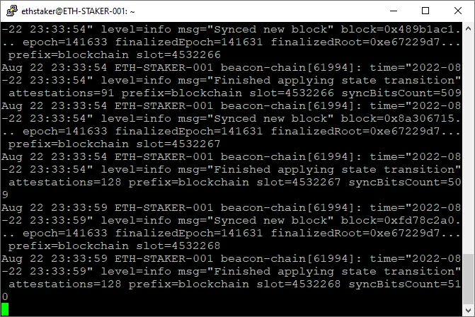

B站以太坊居家节点搭建教程 手把手教你如何搭建
B站视频传送门：
【以太坊POS搭建居家质押节点】
最新硬件配置：
主机 - NUC Gen11 以上 或者任何其他同等CPU性能的小主机
内存 - DDR4 32G （这里推荐2条类似Crucial 16GB DDR4-3200 SODIMM之类的笔记本内存条 双通道要好过单条单通道32G RAM）
硬盘 - 强烈推荐西数的这款WD Black SN850X, 101k/33k r/w IOPS 4TB （可以用2T，新版本的geth自带auto prune自动修剪节点功能，可以延长硬盘使用周期，但是会吃cpu）
-其他的适用ssd可以参考以下资料：
https://gist.github.com/yorickdowne/f3a3e79a573bf35767cd002cc977b038
机器组装部分请参考视频，NUC自带m.2 SSD接口，内存建议双通道16g两张。
系统安装
准备工作
- 下载 Ubuntu 桌面或者服务器版本 20.04.2 LTS 以上 。越新越好，小白建议桌面版，对命令行习惯的可以用服务器版。
- 下载 Balena Etcher
安装过程
- 使用Balena Etcher将Ubuntu写入U盘
- 重启电脑，进入BIOS，选择U盘启动
- 选择安装Ubuntu
准备系统
（以下操作皆在命令行界面terminal下进行）
系统更新和升级
$ sudo apt -y update && sudo apt -y upgrade
$ sudo apt dist-upgrade && sudo apt autoremove
$ sudo reboot
最后一个是系统重启指令，重启后再次进入terminal
生成客户端认证密钥（JWT文件）
在服务器上，以太坊执行层（Execution）和共识层（Consensus）客户端之间的通信，需要使用一种叫做
JWT（JSON Web Token）的安全认证方式。
你可以把JWT简单理解为一个密码文件，这个文件里存放着一段随机生成的密码（32字节的随机字符），两个客户端都会使用这个文件来确认对方的身份，以保证通信的安全。
现在，你需要在服务器上新建一个文件夹，用来存放这个JWT密码文件。
先创建一个文档来存放这个JWT密钥
$ sudo mkdir -p /var/lib/jwtsecret
使用openssl来生成这个密钥
$ openssl rand -hex 32 | sudo tee /var/lib/jwtsecret/jwt.hex > /dev/null
用下列命令来查看生成的密钥
$ sudo nano /var/lib/jwtsecret/jwt.hex
这个文件里存放着一段随机生成的密码（32字节的随机字符）看起来就应该和下图类似：

生成质押文件KEYSTORE
如果你想参与以太坊质押（staking），你需要用一个工具来生成一些数据文件。生成文件的数量取决于你想运行几个验证器。
注意： 如果你之前已经生成了质押用的「存款数据文件」（Deposit
Data）和「验证器密钥」（Validator Keys），就可以跳过这一步。
每个验证器都需要先存入 32个ETH
才能在以太坊主网上正式激活。因此，你的MetaMask钱包里要准备足够的ETH来支付这笔存款。举个例子：如果你计划运行2个验证器，就需要准备
32 × 2 =
64个ETH，还需要额外准备一点ETH用来支付gas费用（手续费）。具体的ETH存入步骤会在后续教程中完成。
下载质押文件生成客户端
$ cd ~
$ curl -LO https://github.com/ethereum/staking-deposit-cli/releases/download/v2.7.0/staking_deposit-cli-fdab65d-linux-amd64.tar.gz
解压,清理，进入目录
$ tar -xvf staking_deposit-cli-fdab65d-linux-amd64.tar.gz
$ cd staking_deposit-cli-fdab65d-linux-amd64
$ rm staking_deposit-cli-fdab65d-linux-amd64.tar.gz
$ cd staking_deposit-cli
这时候如果你输入ls，按回车，你会看到一个可执行文件。类似下图
运行这个可执行文件
$ sudo ./deposit new-mnemonic --num_validators 2 --chain mainnet --eth1_withdrawal_address 'YourWithdrawalAaddress'
这里的num_validators 就是你想生成几个验证者文件，如果有32个eth，那么写1， 如果64个那么写2.以此类推
这里的'YourWithdrawalAaddress'就是你想要提取质押奖励的地址，所以请换成你自己的一个安全的钱包地址，记住，这个放了就不能更改了，千万把控好你这个地址的安
运行这个可执行文件后会出现如下图所示，首先，我们需要先选择语言，然后再次确认我们的提款地址，然后再次选择语言，然后我们需要输入这个验证者keystore的密码，这个密码后面我们会用到，所以请保存好
接下来我们在输入我们的keystore密码后，屏幕会跳转到下面的界面，这是你的助记词，必须保存好，这个助记词不仅可以拿来重新生成你的keystore文件，还是你唯一能够拿回质押的eth的途径
接下来在你确认好你的助记词以后，你会来到这个画面，这里我们的keystore就已经生成好了，并且保存在了一个叫validator_keys的文件夹里面。

这时候如果你进入到这个文件夹里的话，你会看到除了keystore以外的另外一个文件 (叫deposit_data-随机的时间戳.json)，类似下图所示，这个文件我们在后面设置好全部的客户端以后会用到。
安装执行链客户端GETH
回主目录并且下载GETH
$ cd
$ curl -LO https://gethstore.blob.core.windows.net/builds/geth-linux-amd64-1.14.5-0dd173a7.tar.gz
解压
$ tar xvf geth-linux-amd64-1.14.5-0dd173a7.tar.gz
$ cd geth-linux-amd64-1.14.5-0dd173a7
$ sudo cp geth /usr/local/bin
清理下载文件
$ cd ..
$ rm geth-linux-amd64-1.14.5-0dd173a7.tar.gz
$ rm -r geth-linux-amd64-1.14.5-0dd173a7
设置GETH后台运行
（这里需要创建一个无法登陆系统的用户，并且让GETH在这个用户下跑）
$ sudo useradd --no-create-home --shell /bin/false geth
创建一个目录来存放GETH的数据
$ sudo mkdir -p /var/lib/geth
设置GETH权限
$ sudo chown -R geth:geth /var/lib/geth
创建一个GETH的服务文件 并且用nano来修改文件
$ sudo nano /etc/systemd/system/geth.service
一字不差的拷贝下列文件内容
[Unit]
Description=Geth Execution Client (Mainnet)
After=network.target
Wants=network.target
[Service]
User=geth
Group=geth
Type=simple
Restart=always
RestartSec=5
TimeoutStopSec=600
ExecStart=/usr/local/bin/geth \
--mainnet \
--datadir /var/lib/geth \
--authrpc.jwtsecret /var/lib/jwtsecret/jwt.hex \
--db.engine pebble
[Install]
WantedBy=default.target
看上去应该是像这样
保存并且退出nano
先按CTRL+x，然后按y，然后按回车
系统软启动一下，然后启动GETH
$ sudo systemctl daemon-reload
$ sudo systemctl enable geth
$ sudo systemctl start geth
$ sudo systemctl status geth
如果一切正常，他就应该看起来是这样：
按q来退出这个geth状态界面
查看GETH的日志
$ sudo journalctl -fu geth
这里如果查看GETH的运行状态，他会显示一些关于寻找peers的日志，而不会立刻开始更新，这是正常的，因为我们还没有设置信标链客户端
安装信标链客户端PRYSM
Prysm信标链客户端由两部分组成，一是信标链客户端本身，二是信标链客户端的验证者客户端
首先，我们需要下载信标链客户端和验证者客户端
$ cd ~
$ curl -LO https://github.com/prysmaticlabs/prysm/releases/download/v5.1.0/beacon-chain-v5.1.0-linux-amd64
$ curl -LO https://github.com/prysmaticlabs/prysm/releases/download/v5.1.0/validator-v5.1.0-linux-amd64
重命名，并且将文件可执行话
$ mv beacon-chain-v5.1.0-linux-amd64 beacon-chain
$ mv validator-v5.1.0-linux-amd64 validator
$ chmod +x beacon-chain
$ chmod +x validator
$ sudo cp beacon-chain /usr/local/bin
$ sudo cp validator /usr/local/bin
清理下载文件
$ rm beacon-chain && rm validator
导入前面生成的质押文件validator keystore
先创建一个文件夹来储存刚才生成的质押keystore文件
$ sudo mkdir -p /var/lib/prysm/validator
将刚才生成的keystore文件拷贝到这个文件夹里
$ sudo /usr/local/bin/validator accounts import --keys-dir=$HOME/staking-deposit-cli/validator_keys --wallet-dir=/var/lib/prysm/validator --mainnet
这里的--keys-dir就是你刚才生成的keystore文件的路径，注意如果你的keystore文件并不是放在了这个路径下的话，你就要告诉他你放在了什么路径下，自己修改这个路径。--wallet-dir就是你刚才创建的validator文件夹的路径
如果没有问题的话，你会看到下面的画面
这里我们先输入accept,然后就会进去下一个画面，需要创建一个prysm validator客户端的钱包，我们首先输入一个密码来保护我们这个钱包。你可以输入和之前在制作keystore的时候一样的密码。
接下来我们会进如下面的画面，我们需要输入我们的keystore的密码
输入正确的密码后，我们的keystore导入过程就算完成了。你会看到下面的画面
创建一个信标链客户端validator钱包的密码文档，因为后续开启validator客户端的时候我们需要他自己去自动读取这个密码。
$ sudo nano /var/lib/prysm/validator/password.txt
如图所示，在这个文件里输入你刚才创建的prysm validator钱包的密码

按CTRL+x，然后按y，然后按回车, 这样就可以保存并且退出nano了
配置信标链客户端
创建一个用户
$ sudo useradd --no-create-home --shell /bin/false prysmbeacon
设置权限
$ sudo mkdir -p /var/lib/prysm/beacon
$ sudo chown -R prysmbeacon:prysmbeacon /var/lib/prysm/beacon
创建一个prysm信标链客户端的服务文件
$ sudo nano /etc/systemd/system/prysmbeacon.service
一字不差的拷贝下列文件内容
[Unit]
Description=Prysm Consensus Client BN (Mainnet)
Wants=network-online.target
After=network-online.target
[Service]
User=prysmbeacon
Group=prysmbeacon
Type=simple
Restart=always
RestartSec=5
ExecStart=/usr/local/bin/beacon-chain \
--mainnet \
--datadir=/var/lib/prysm/beacon \
--execution-endpoint=http://127.0.0.1:8551 \
--jwt-secret=/var/lib/jwtsecret/jwt.hex \
--suggested-fee-recipient=FeeRecipientAddress \
--checkpoint-sync-url=CheckpointSyncURL \
--genesis-beacon-api-url=CheckpointSyncURL \
--accept-terms-of-use
[Install]
WantedBy=multi-user.target
这里的checkpoint-sync-url和genesis-beacon-api-url是指prysm的信标链需要一个已经完成区块更新的地址来告诉你的节点该往哪个区块去更新。这里有一个社区提供的完整节点的地址，可以拷贝任意一个来替代你的两个CheckpointSyncURL参数
https://eth-clients.github.io/checkpoint-sync-endpoints/替换完成后应该看上去应该是像这样
保存并且退出nano
先按CTRL+x，然后按y，然后按回车
系统软启动一下，然后启动Prysm信标链客户端
$ sudo systemctl daemon-reload
$ sudo systemctl enable prysmbeacon
$ sudo systemctl start prysmbeacon
$ sudo systemctl status prysmbeacon
如果一切正常，他就应该看起来是这样：
按q来退出这个prysm状态界面
这里如果查看PRYSM信标链客户端的运行状态，他会显示类似这样的界面

按CTRL+C来退出这个prysm信标链日志界面
安装PRYSM验证者客户端
创建一个用户
$ sudo useradd --no-create-home --shell /bin/false prysmvalidator
设置权限
$ sudo chown -R prysmvalidator:prysmvalidator /var/lib/prysm/validator
创建一个prysm验证者客户端的服务文件
$ sudo nano /etc/systemd/system/prysmvalidator.service
一字不差的拷贝下列文件内容
[Unit]
Description=Prysm Consensus Client VC (Mainnet)
Wants=network-online.target
After=network-online.target
[Service]
User=prysmvalidator
Group=prysmvalidator
Type=simple
Restart=always
RestartSec=5
ExecStart=/usr/local/bin/validator \
--datadir=/var/lib/prysm/validator \
--wallet-dir=/var/lib/prysm/validator \
--wallet-password-file=/var/lib/prysm/validator/password.txt \
--suggested-fee-recipient=FeeRecipientAddress \
--graffiti="" \
--accept-terms-of-use
[Install]
WantedBy=multi-user.target
这里的--suggested-fee-recipient是指你想要收取爆块后执行链产生的小费奖励的地址，所以请换成你自己的一个安全的钱包地址
这里的graffiti是指你想要在区块链上显示的一个小标语，随便写
替换完成后应该看上去应该是像这样
保存并且退出nano
先按CTRL+x，然后按y，然后按回车
系统软启动一下，然后启动Prysm验证者客户端
$ sudo systemctl daemon-reload
$ sudo systemctl enable prysmvalidator
$ sudo systemctl start prysmvalidator
$ sudo systemctl status prysmvalidator
如果一切正常，他就应该看起来是这样：
按q来退出这个prysm验证者状态界面
查看PRYSM验证者客户端的日志
$ sudo journalctl -fu prysmvalidator
这里如果查看PRYSM验证者客户端的运行状态，他会显示类似这样的界面

按CTRL+C来退出这个prysm验证者日志界面
等待节点更新完成，网速快的话，大概8个小时内能完成节点搭建
如果你的节点只是拿来提取链上信息，那么你到这一步就可以了，不需要往信标链里存ETH
信标链存eth，开启质押
去官网这个链接 https://launchpad.ethereum.org/
跟着官网的质押流程，选择你需要质押的数量，然后上传刚才我们在上面生成的带有时间戳的deposit_data-(随机时间戳).json文件，并且连接你有eth的钱包。把eth存进信标链就可以了
如果有疑问，视频的最后部分有存ETH的流程演示。请自行观看。